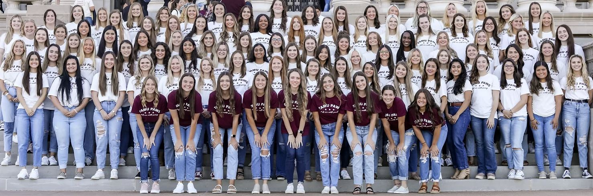
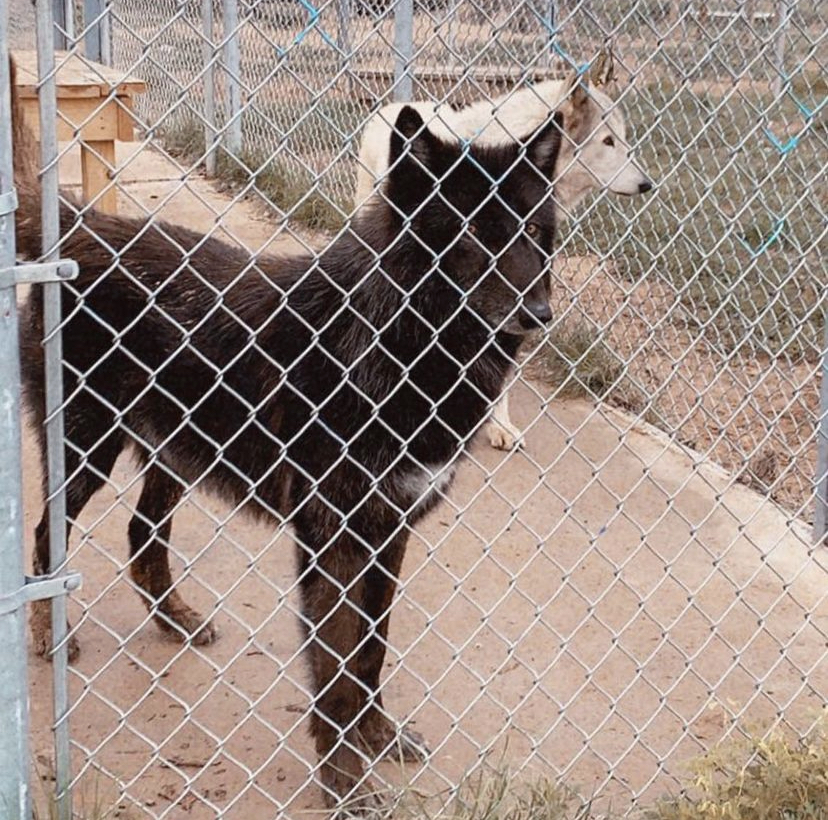
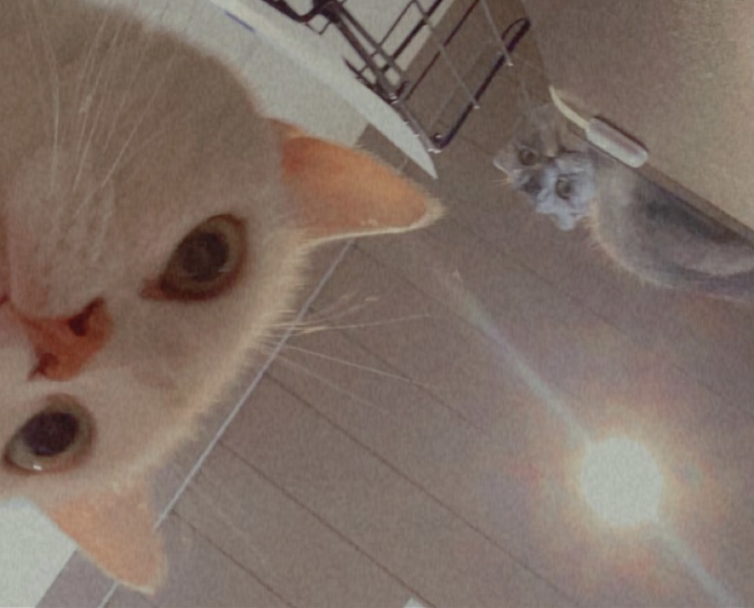
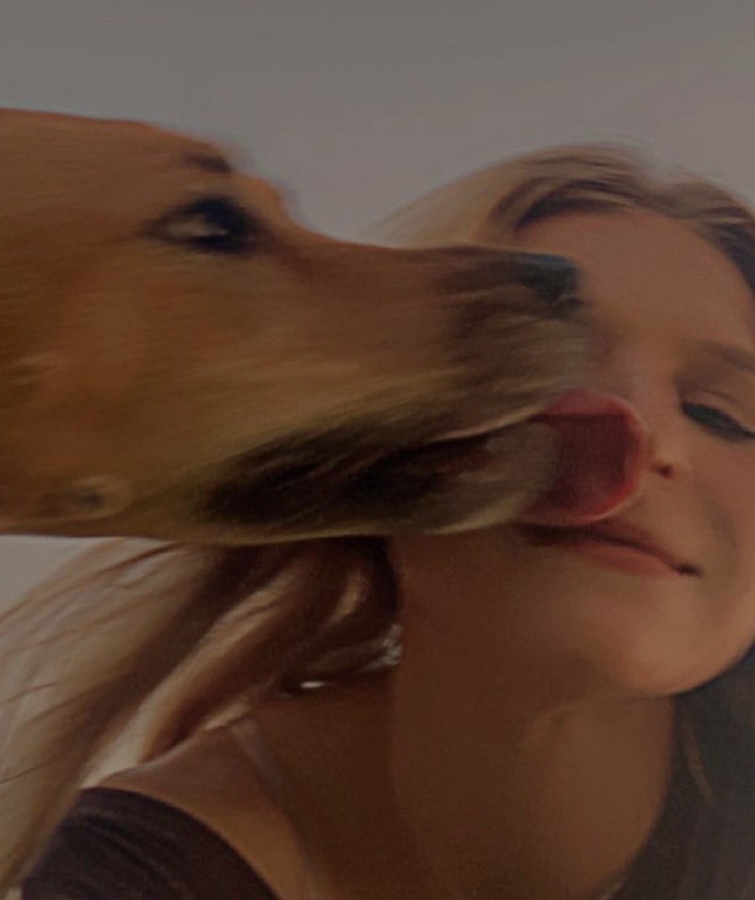

In my High School years, I spent several hours per week volunteering for a local cat shelter.
Additionally, I designed a logo and painted/constructed trail signs for a 501(c)(3) nonprofit, the Lake Travis Trail Coalition
(read more about this project here).
Present
Now, I am the Public Relations Officer of TAMU P.A.W.S. (Pets Are Worth Saving), a women's org centered on service and sisterhood
with a common interest in saving animals' lives. With them, I help by creating promotional items used for advertising and
fundraising efforts, as well as utilizing our social media to raise awareness of the organization and increase membership, which
benefits the club and animal rescue organizations who partner with PAWS, such as The International Animal Rescue.
We travel to various rescues and sanctuaries in and around the Bryan/College Station area, providing any hands-on or financial support that we can, while building strong bonds between
like-minded girls, who all share the same passion for helping other living beings in need.
When I first came to A&M as a Freshman during the infamous COVID-overtaken year of 2020, I did not have a single in-person class.
I was forced to attend all of my lectures online, if at all, and had little to no daily human interaction. I saw a social media post
about TAMU PAWS and knew I'd found my people. Ever since I was young, I'd always had a profound fascination and appreciation for all
living things. I spent a lot of my time outdoors, exploring the greenbelt in my backyard, and observing wildlife from a
distance, awed by their mannerisms, and envying their freedom to live unbound, with a simple, instinct-driven goal ruling every
decision throughout their lives; no matter the longevity. With this intrigue, I developed an impulsive desire to aid animals in need
and learn all that I can along the way. While I did not have the stomach to go the route of studying veterinary medicine, due to my discomfort
in having to frequently see animals in pain, I knew I wanted to keep them as a part of my life and was ecstatic abouting finding
an organization at my university where I could do just that.




Future
You know that saying "You Only Live Once?" Well, I've vowed to live under that concept and make my one life
the best that I possibly can. I want to truly make a differnece in some way, the specifics of which are still unknown to me.
But I know that, wherever I end up in my career, I'm going to push myself until I'm able to sustain my side projects and goals, including
possibly opening an animal sanctuary of my own or finding some other way to truly save lives.